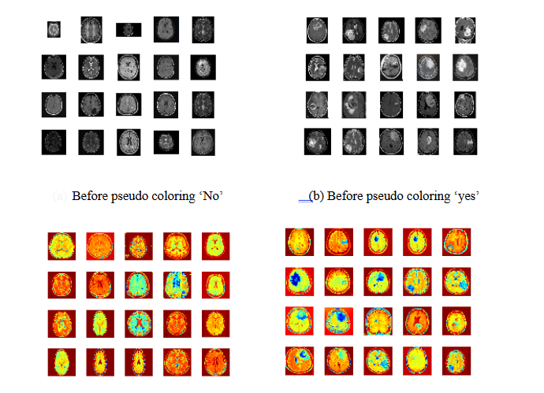

Detection of Brain Tumor from MRI Image under Deep learning and Bag of Features Algorithm
Accurate disease detection from medical images is essential in modern healthcare, with machine learning and deep learning techniques minimizing human error. This research focuses on detecting brain tumors in MRIs using preprocessing methods and pseudo-coloring, followed by model training with CNN and LSTM. The Bag-of-Features (BoF) algorithm is applied to the preprocessed dataset. Results indicate that CNN achieves nearly 100% accuracy with 90% training data, 94.87% with 85%, and 90% with 80%. LSTM also reaches approximately 100% accuracy with 80% training data. The BoF method yields an average accuracy of 80% over multiple experiments.

Summary, Findings and Future Scopes
This thesis proposes an automatic brain tumor detection method using a combination of three approaches: CNN, LSTM, and Bag of Features. Initial processing steps include de-noising, compression, and scaling of MRI images, followed by converting preprocessed grayscale images into pseudo-colored versions to enhance visual quality. Feature extraction techniques such as HOG, SURF, and SIFT are employed in the Bag of Features approach. The LSTM model is trained with sequence inputs using multiple layers and 100 hidden units, while K-means clustered segments are utilized for the CNN model. The accuracy of each method is evaluated using confusion matrices and loss-accuracy profiles to identify the best model for detection.
- The thesis proposes an automatic brain tumor detection system that integrates CNN, LSTM, and Bag of Features methodologies, using preprocessed MRI images enhanced with pseudo-coloring and feature extraction techniques like HOG, SURF, and SIFT.
- Key limitations include high computational demands of deep learning models, variability in the effectiveness of feature extraction methods, sensitivity to hyperparameter settings, and challenges in ensuring model generalization across diverse MRI sources.
- Future work aims to incorporate multi-modal imaging techniques and improve feature extraction through hybrid approaches that combine traditional methods with deep learning for enhanced tumor detection accuracy.
The study highlights several limitations, including the high computational demands of deep learning models, variability in feature extraction methods affecting consistency, sensitivity to hyperparameter selection, potential artifacts from pseudo-coloring, and challenges in model generalization across different MRI sources. Future work aims to enhance detection accuracy through multi-modal imaging techniques, incorporating additional modalities like CT and PET for comprehensive analysis. Additionally, improving feature extraction through hybrid approaches that merge traditional methods with deep learning could lead to better identification of tumors and finer details in MRI images.